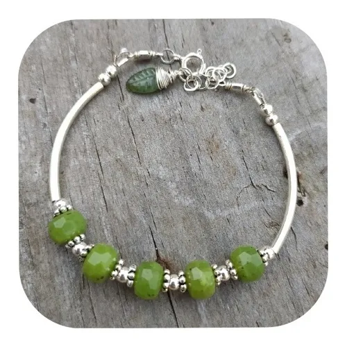

|  | Detalle:
La plata también entrega un beneficio a la salud: es naturalmente antimicrobiana y elimina
todo tipo de gérmenes. Se trata de una característica que adquiere incluso más importancia en estos tiempo de
pandemia, pues previene el contagio de enfermedades respiratorias por medio de las Joyas. El jade tiene múltiples
beneficios para la salud, tiene propiedades calmantes, estimula la energía vital y, según la medicina oriental, posee
cualidades curativas.
|
Nombre:
Pulsera de plata y jade GZ
|
|
Precio:
$39.00 US
|
|
Tecnica usada:
Aro de plata 925
Jade verde
|